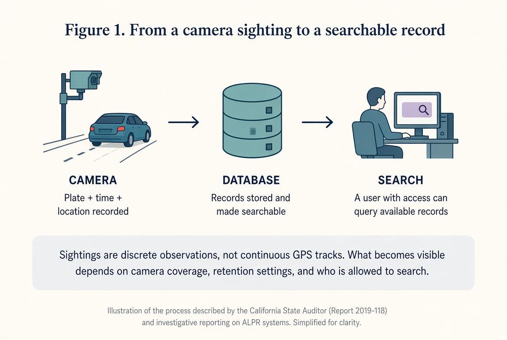
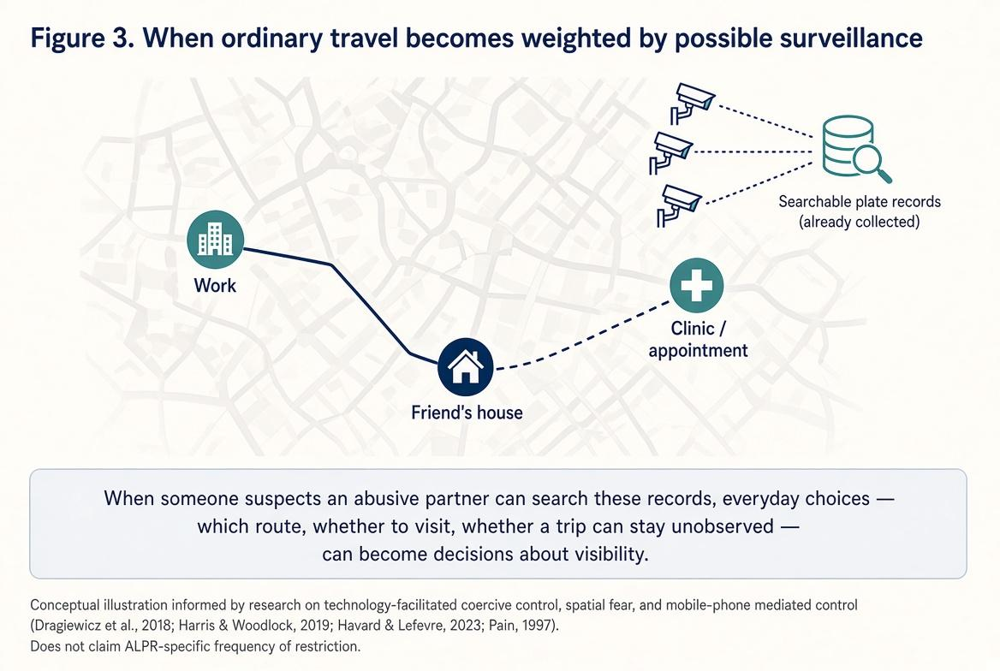

Marci Bakely took her car to a mechanic three times to look for trackers, according to The Washington Post. She later learned that her former partner, a police chief, had used Flock Safety’s roadside camera network to search for her vehicle. Logs cited by the newspaper showed roughly 600 searches involving her plate and her teenage daughter’s. [1]
“How did you see I went to Cleveland the other day? I didn’t tell you”
The Post identified at least 50 officers accused or charged with misusing license plate readers. In 26 cases, the targets included partners, ex-partners, or people the officers wanted to meet. The count shows cases that came to light, not how common misuse is nationwide. [1]
01 / How it works
How does a sighting become searchable?

Automated license plate readers (ALPRs) record a plate, time, and location. They can also alert police to vehicles on lists, such as stolen cars. [2]
02 / Access and purpose
What happens when the person searching is an ex?
An officer’s work account may allow a search for a stolen car. That does not make it acceptable to search for an ex-partner. Figure 2 shows why having access and using it appropriately are different questions. [2, 3]
“an adversarial but authenticated user”
In a study involving 39 survivors and 50 professionals, Diana Freed and her colleagues found that abusers often used ordinary accounts and familiar tools. Their phrase above means someone who can log in but uses that access to cause harm. Although the study examined other technologies, it raises a useful question for police systems: what happens when the person misusing access already has an account? [3]
![Figure 2. One account, different purposes. Two panels share the same institutional account. The left panel, an authorized investigative purpose, lists example reasons such as a stolen vehicle, a missing person, an active investigation, or a hot-list match, and is logged as work-related use. The right panel, an unauthorized personal purpose, lists example reasons such as monitoring a current or former partner, a new partner, or another private individual, and may use the same login credentials. A note says access to the system does not by itself establish that a search was justified; determining purpose requires stated reasons, investigation records, and independent review.](figure2.jpg)
Changing a password or deleting an app on her own phone cannot revoke an officer’s database access. The agency has to review how its account is being used.
A record of a search is only part of the story
Search records
Can document a query and the account used.
Survivor accounts
Can explain what someone noticed, feared, or changed.
Bakely described looking for surveillance. That does not tell us whether she stopped visiting friends or changed her route to work. To understand those effects, we need her account of what changed, alongside the search records. [1]
03 / Everyday choices
What could this mean for an ordinary trip?
Leaving an abusive partner does not always end the monitoring. Harris and Woodlock describe how technology lets abuse reach across distance. Havard and Lefevre examine the effects of feeling watched, while Pain connects fear of violence with everyday travel choices. [4–6]

Someone who suspects monitoring may think twice about visiting a friend or keeping an appointment. An abuser might also use location information to arrange unwanted contact, without revealing how he found her. Figure 3 focuses on the everyday places at stake.
The research does not tell us how often ALPR misuse changes someone’s travel. Continuing to work or see friends also does not mean the monitoring has no effect: those trips may take more planning, money, or help from others. [4–6]
04 / Accountability
Would anyone notice the misuse?
“have not audited the use of their systems”
The 2020 audit found problems with access, sharing, retention, and oversight at four California agencies. Those findings concern the agencies and period reviewed; they do not describe every program today. [2]
What has Flock said it will change?
“Abuse of Flock technology, at any level, is unacceptable.”
In August 2026, Flock said it would require Audit Assistance and search case codes by year’s end. Emergency searches could bypass the case-code rule but would be flagged for review. The company also recommended keeping records for seven days, while allowing existing customers to retain their current periods. [7]
These are the company’s commitments. They do not, by themselves, show that stalking has declined or that survivors feel safer.
05 / California readers
What does California require?
California’s ALPR law requires operators to maintain a usage and privacy policy and post it online if they have a website. Operators that access or provide access to ALPR information must keep a record of access, including the time, plate or other search elements, user, and purpose. These duties do not automatically give an individual access to every record. [8]
Three questions for your local agency
Who can search?
Where is your ALPR usage and privacy policy, and which staff or outside agencies can access the records?
Who checks?
Who reviews access logs, how often, and how do they check the reason entered for a search?
How can someone raise a concern?
How can someone report suspected misuse and ask for relevant records?
A request may help you learn how the system is used. It does not guarantee access to every log or an explanation of every search.
Accountability should include what happens after misuse is found. Stopping a search is one step; helping someone regain ordinary choices is another.